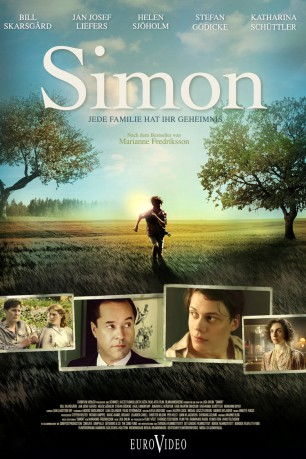

#5111 Simon
 
 IMDB-Wertung: 6.4 / 10
IMDB-Wertung: 6.4 / 10  Metascore: 0
Metascore: 0 
Simon lebt mit seinen Eltern am Rande Göteborgs. Während Simons Vater ein handfester Arbeiter ist, ist Simon ein Bücherwurm. In der Schule freundet sich Simon mit dem handwerklich begabten Isak an, Sohn des reichen Buchhändlers Ruben Lentov. Isaks Familie ist aus Nazi-Deutschland geflohen und hat in Schweden eine neue Heimat gefunden. Verbunden durch das Gefühl, anders zu sein, werden die Jungen enge Freunde. Vor dem Hintergrund des aufziehenden Zweiten Weltkriegs und der Schrecken der Judenverfolgung verflechten sich die Schicksale ihrer Familien über Jahrzehnte hinweg. Erst spät erfährt Simon, dass er adoptiert wurde. Nach dem Krieg macht er sich auf die Suche nach seinem Ursprung – eine Reise, die ihn verändern wird.
Jahr: 2011
Dauer: 122 Minuten
FSK: 16
Land: Schweden Studio: Farbfilm-VerleihTonspuren:
Untertitel:
Auflösung: 1080p (1920x816) Größe: 5765 MB
Genre: Drama
Regisseur: Lisa Ohlin
Drehbuch: Adam Rifkin
Soundtrack:
Darsteller:
 Bill Skarsgård als Simon
Bill Skarsgård als Simon Jan Josef Liefers als Ruben
Jan Josef Liefers als Ruben- Erica Löfgren als Klara
 Katharina Schüttler als Iza
Katharina Schüttler als Iza- Helen Sjöholm als Karin
- Stefan Gödicke als Erik
- Karl Linnertorp als Isak
- Jonatan S. Wächter als Young Simon
- Karl Martin Eriksson als Young Isak
- Josefin Neldén als Mona
- Lena Nylén als Olga
- Cecilia Nilsson als Inga
- Jan-Erik Emretsson als Neighbour Klas
- Pär Brundin als Neighbour Åke
- Frederik Nilsson als Teacher
- Hermann Beyer als Ernst Habermann
- Sven-Åke Gustavsson als Professor
- Jan Holmquist als Doctor
- Iwar Wiklander als Headmaster
- Peter Borenstein als Rabbi
- Dellie Kamijo als Malin Five Year
- Johanna Malmsten als Malin Two Year
- Tage Wirenhed als Malin Baby
- Hanna Hedin Hillberg als Audience Member , uncredited
- Per Holtstrand als Cykelbudet Erik , uncredited
- Tom Lidgard als Göran , uncredited
- Raphaël Niba als Hamnarbetare , uncredited
- Johan Nordahl als Skolelev , uncredited
- Marcus Standoft als Hamnarbetare , uncredited
Datei: X:\2011(N-Z)\Simon (2011, FSK16, 1920x816).mkv seit 23.12.2016
Festplatte: HD 2011(G-Z)
 Es gibt insgesamt 132 Filme in der Gruppe '2011(N-Z)'
Es gibt insgesamt 132 Filme in der Gruppe '2011(N-Z)'